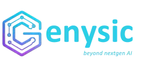

Research — Digital Twin cho EVNNghiên cứu & Tổng hợp
Phân tích toàn diện thị trường, nền tảng công nghệ, case studies thực tế và đề xuất lộ trình triển khai Digital Twin cho Tập đoàn Điện lực Việt Nam (EVN).
Tổng quan thị trường
Thị trường Digital Twin cho ngành điện đang tăng trưởng mạnh mẽ, được thúc đẩy bởi nhu cầu hiện đại hóa lưới điện và tích hợp năng lượng tái tạo.
Nền tảng thương mại
Các vendor hàng đầu thế giới về Digital Twin cho ngành điện lực, được đánh giá theo mức độ phù hợp với EVN.
| # | Nền tảng | Thị phần | Phù hợp EVN | Thế mạnh & Sản phẩm chính |
|---|---|---|---|---|
| 01 | GE Vernova GridOS Platform |
12.8% | Rất cao | Môi trường Digital Twin thống nhất cho lưới điện, tích hợp ADMS, AEMS, DERMS. R&D 680 triệu USD/năm. Bao phủ từ phát điện đến phân phối, hỗ trợ tích hợp năng lượng tái tạo phân tán (DER). |
| 02 | Siemens AG Xcelerator + Simcenter |
10.4% | Cao | Mô phỏng vật lý từ cấp linh kiện đến cấp lưới quốc gia. Mạnh nhất cho truyền tải điện. Thâu tóm Altair Engineering (10 tỷ USD, 03/2025) bổ sung HPC simulation. Giảm 40–60% chi phí bảo trì tại chỗ qua chẩn đoán từ xa. |
| 03 | ETAP Electrical Digital Twin |
— | Rất cao | Nền tảng duy nhất tập trung 100% hệ thống điện. Load flow, short circuit, arc flash, protection coordination, AFAS (Automated Fault Analysis), eOTS (Operator Training Simulator). Tích hợp AI/GPT 2024. |
| 04 | Bentley Systems iTwin Platform |
— | Cao | OpenUtilities Digital Twin Services — hợp nhất GIS, 3D model, performance data. Tower Digital Twins dùng UAV + ML. AssetWise 4D (không gian + thời gian). Đặc biệt phù hợp quản lý cột điện, trạm biến áp truyền tải. |
| 05 | ABB Ltd. ABB Ability |
9.1% | Cao | Cloud-based digital twin cho lưới điện thông minh. Nền tảng tích hợp sâu trong thiết bị đóng cắt, máy biến áp, tự động hóa lưới. ABB có nhiều thiết bị đang vận hành trong hệ thống điện Việt Nam. |
| 06 | Schneider / AVEVA One Digital Grid |
— | Trung bình–Cao | Schneider mua lại AVEVA (9.5 tỷ USD). Tích hợp NVIDIA Omniverse DSX Blueprint. Schneider One Digital Grid Platform: ADMS, edge automation, phân tích thời gian thực. EcoStruxure Machine Expert Twin với VR/AR. |
Cloud & Open-source
Các nền tảng đám mây và open-source hỗ trợ xây dựng Digital Twin, phù hợp cho từng giai đoạn triển khai.
PaaS mô hình hóa quan hệ giữa tài sản qua IoT thời gian thực. Tích hợp HoloLens, Synapse, Power BI.
Tích hợp IoT, time-series, S3, Kinesis, SageMaker. Hình ảnh hóa 3D thời gian thực.
Mô phỏng vật lý GPU-accelerated, photorealistic. Tích hợp AVEVA PDMS/E3D.
| Công cụ | Vai trò | Phù hợp |
|---|---|---|
| Eclipse Ditto | IoT middleware / DT framework, MQTT 5 | PoC |
| GridLAB-D | Mô phỏng phân phối điện (DOE/PNNL) | PoC |
| OpenModelica | Mô hình hóa linh kiện & điều khiển | R&D |
| Mosaik | Co-simulation orchestrator | R&D |
| pandapower | Python steady-state simulation | R&D |
| HELICS | Co-simulation quy mô lớn | R&D |
| OpenDSS | Phân phối điện (EPRI) | PoC |
| PyPSA | Tối ưu hệ thống năng lượng | R&D |
* Phù hợp cho nghiên cứu và PoC. Cần kết hợp với nền tảng thương mại cho production quy mô quốc gia.
Kiến trúc kỹ thuật
Kiến trúc tiêu chuẩn cho Power Grid Digital Twin, áp dụng cho hệ thống điện quy mô EVN.
Thực tế triển khai
Các tập đoàn điện lực lớn đã triển khai Digital Twin thành công với kết quả ấn tượng.
| Đơn vị | Quốc gia | Ứng dụng Digital Twin | Kết quả | Nền tảng |
|---|---|---|---|---|
| Singapore Power | Singapore | Digital twin toàn bộ lưới điện quốc đảo | Giám sát real-time, dự báo sự cố, tối ưu phản ứng khẩn cấp | Custom |
| Exo | Canada | Digital twin cột điện truyền tải | Tiết kiệm 80 triệu USD — phục hồi thay vì thay thế cột điện | Bentley |
| Essential Energy | Australia | Drone + DT trạm biến áp | Giảm 50% chi phí, giảm phát thải carbon | Bentley |
| PLN Indonesia | Indonesia | SCADA/ADMS/AMI quy mô lớn (I-ENET, World Bank 500M USD) | Hiện đại hóa lưới điện — case study gần nhất với EVN | ABB + DNV |
| Enel SP | Brazil | Network Digital Twin cho đô thị mật độ cao | Số hóa toàn bộ hạ tầng phân phối tại São Paulo | Custom |
| Adger Energi | Na Uy | Azure Digital Twins cho lưới phân tán | Tránh đầu tư nâng cấp tốn kém nhờ tối ưu DER | Azure |
| ADNOC | UAE | ETAP eOTS — đào tạo vận hành, SCADA/HMI mô phỏng | Nâng cao năng lực vận hành, quản lý sự cố phức tạp | ETAP |
| POWERCHINA Hubei | Trung Quốc | Trạm biến áp 3D, cập nhật theo tiến độ | Giảm 90% tranh chấp thiết kế, tiết kiệm 3M CNY, rút ngắn 30 ngày | Bentley |
| Duke Energy | Mỹ | Predictive maintenance, mô phỏng kịch bản | Giảm downtime, tích hợp NLTT hiệu quả hơn | GE |
Khảo sát 660 tổ chức, 11 ngành công nghiệp:
Đề xuất cho EVN
Gợi ý nền tảng Digital Twin phù hợp cho từng đơn vị thành viên của Tập đoàn Điện lực Việt Nam.
| Cấp độ | Đơn vị EVN | Platform đề xuất | Lý do |
|---|---|---|---|
| Truyền tải quốc gia | EVNNPT | GE Vernova GridOS hoặc Siemens Xcelerator + Bentley iTwin | Quản lý lưới 500kV/220kV, cột điện, trạm biến áp truyền tải |
| Phân phối | EVNNPC / EVNSPC / EVNCPC / EVNHANOI / EVNHCMC | ETAP + Schneider One Digital Grid | Bảo vệ rơle, ADMS, quản lý sự cố phân phối |
| Nhà máy điện | EVNGENCO 1 / 2 / 3 | Siemens Simcenter hoặc ETAP eOTS | Mô phỏng nhà máy, đào tạo vận hành |
| Cloud chung | Toàn EVN | Azure Digital Twins hoặc GE GridOS Cloud | Nền tảng đám mây thống nhất |
| Pilot / R&D | EVNIT / Trường đào tạo | Eclipse Ditto + GridLAB-D + pandapower | Nghiên cứu, PoC, chi phí thấp |
Bối cảnh khu vực
EVN đang ở thời điểm thuận lợi để đầu tư Digital Twin, cùng xu hướng chuyển đổi số trong khu vực.
Triển khai SCADA/ADMS/AMI quy mô lớn. Dự án I-ENET (World Bank, 500 triệu USD, 2025–2032). Hợp tác ABB và DNV — quy mô và giai đoạn chuyển đổi tương đồng với EVN.
Xây dựng lộ trình số hóa lưới điện, tích hợp năng lượng tái tạo quy mô lớn. Đầu tư vào smart grid và IoT infrastructure.
Cải cách thị trường điện (DPPA, Luật Điện lực 2025). Mục tiêu net-zero 2050 theo PDP8. Nhu cầu tích hợp NLTT tăng mạnh — Digital Twin là công cụ then chốt.
Vai trò Genysic
Genysic định vị là đối tác tích hợp hệ thống, kết hợp năng lực sẵn có với nền tảng Digital Twin chuyên ngành.
Xu hướng 2024–2025
Hierarchical DT — Microgrid DT tự trị ở cấp thấp, phối hợp lên cấp quốc gia. Dự án TwinEU (01/2024) liên kết các twin địa phương thành mạng lưới Pan-European.
Kết hợp xử lý biên (edge) và đám mây (cloud) để tối ưu độ trễ tại chỗ và khả năng mở rộng quy mô lớn. Phù hợp cho bảo mật OT/IT.
Tích hợp LLM (GPT-4, Claude) vào SCADA/EMS — điều độ viên hỏi bằng ngôn ngữ tự nhiên, AI chạy phân tích và đề xuất hành động.